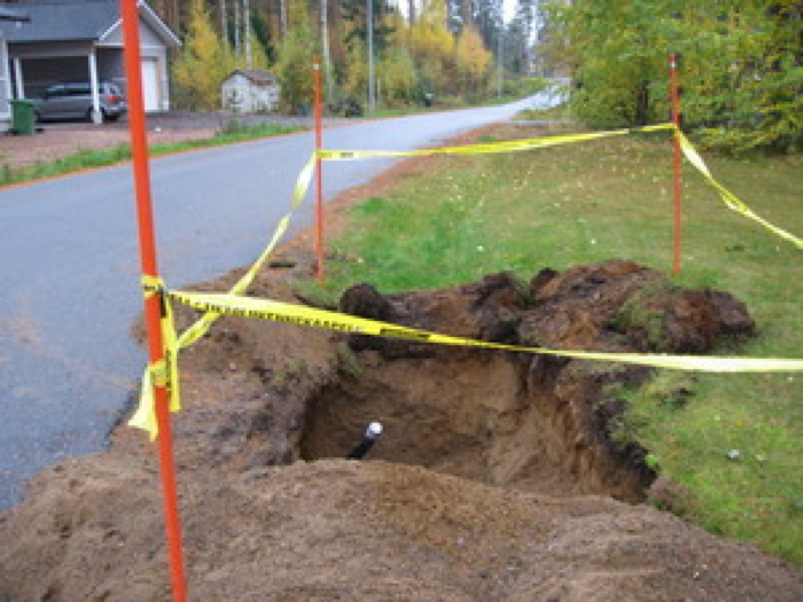
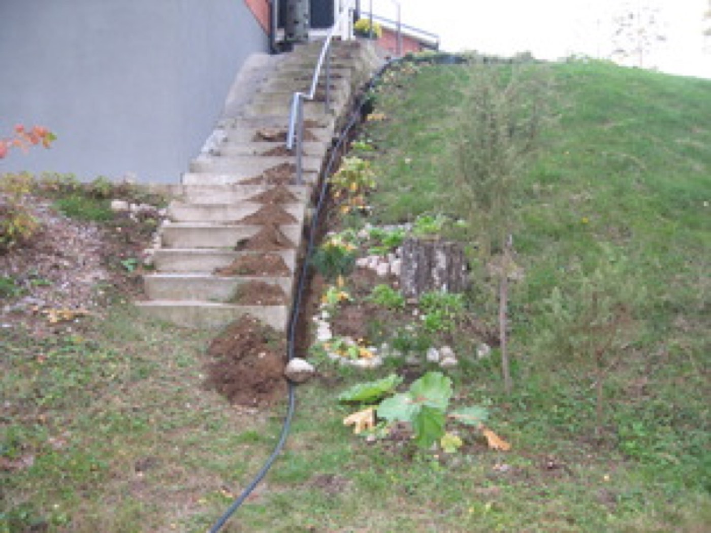
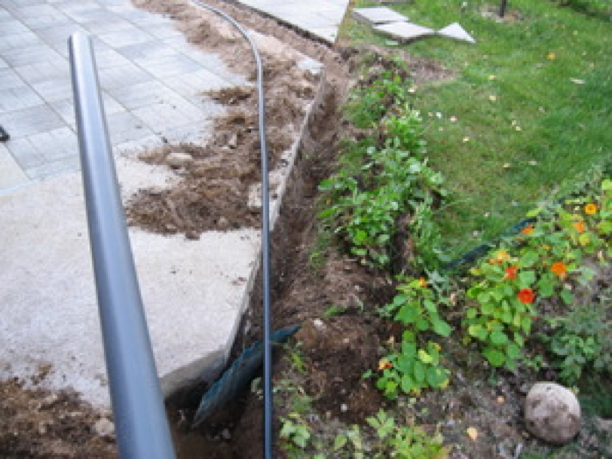
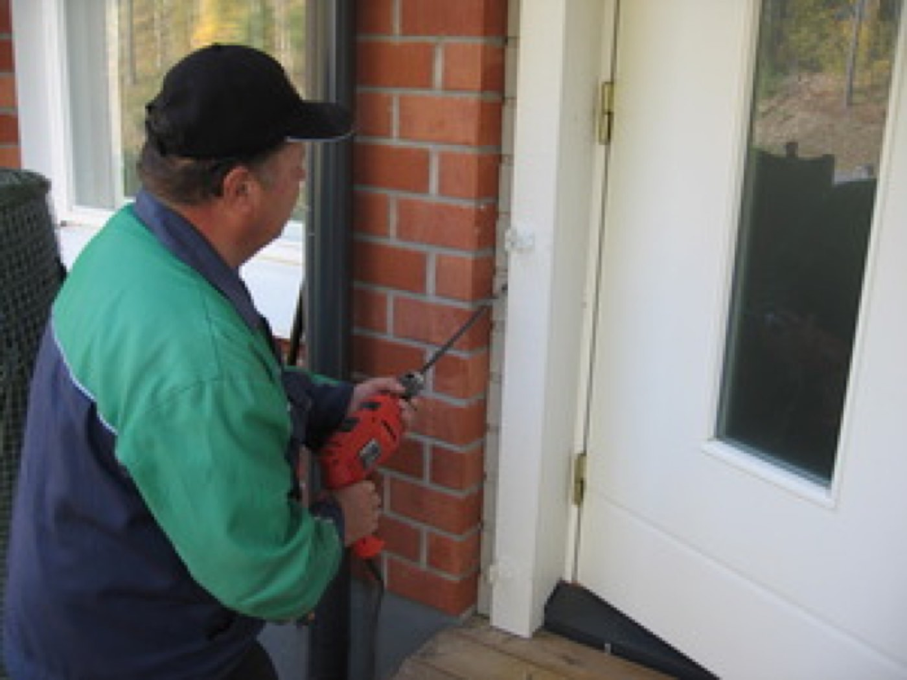
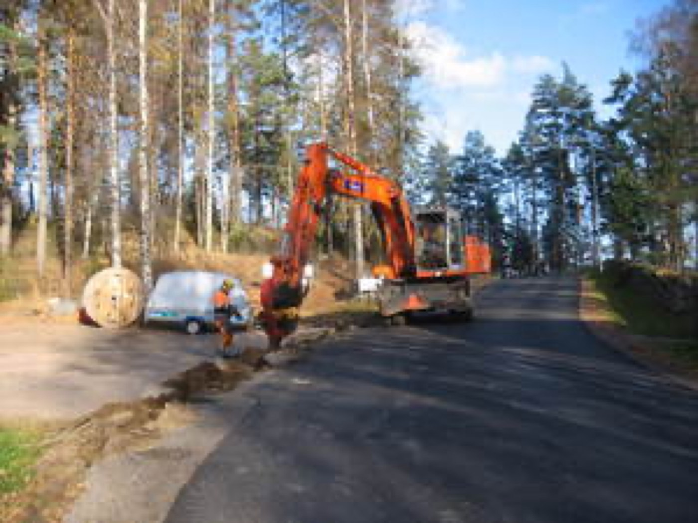
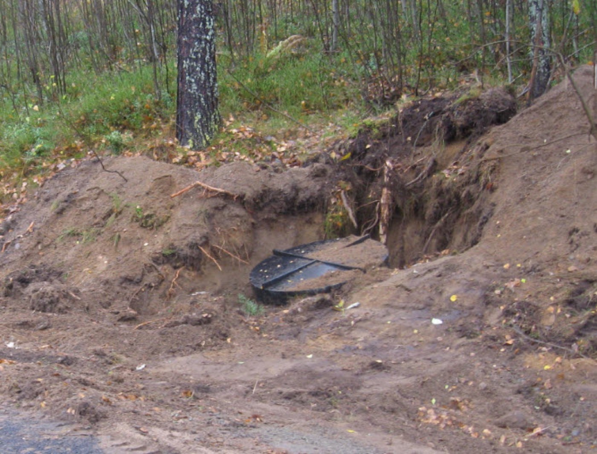
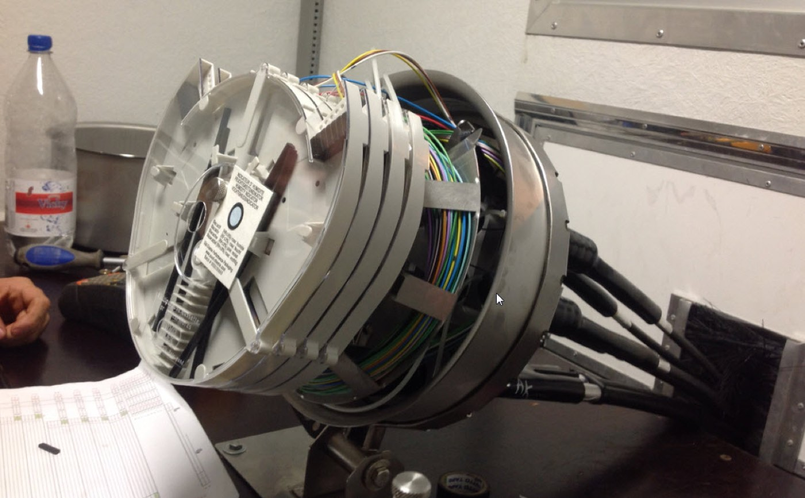
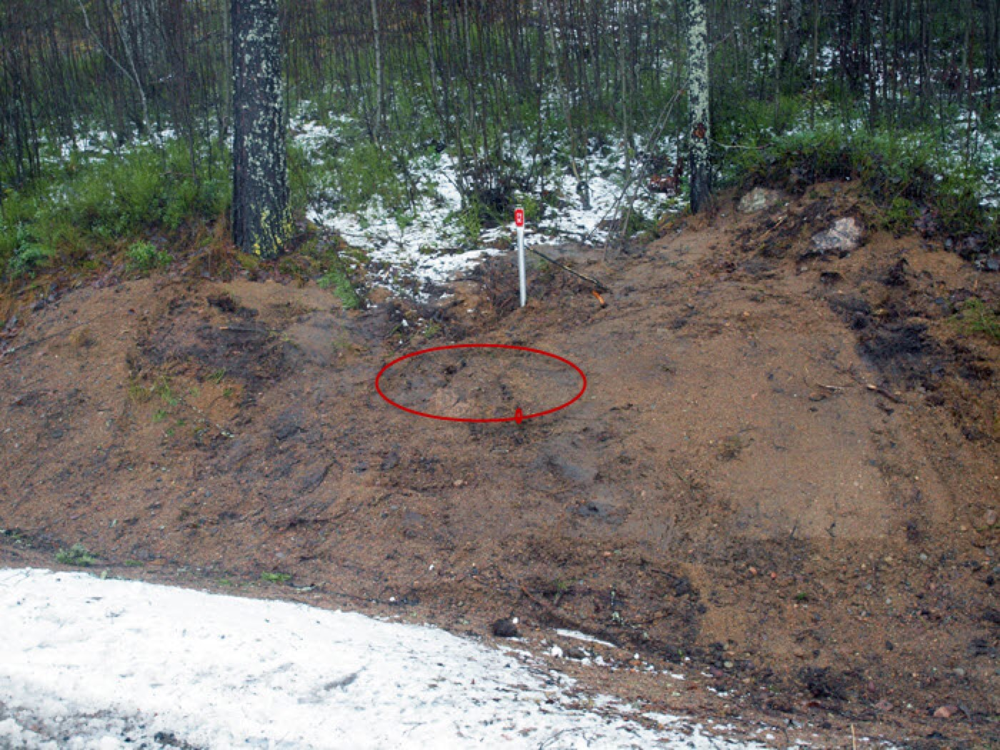
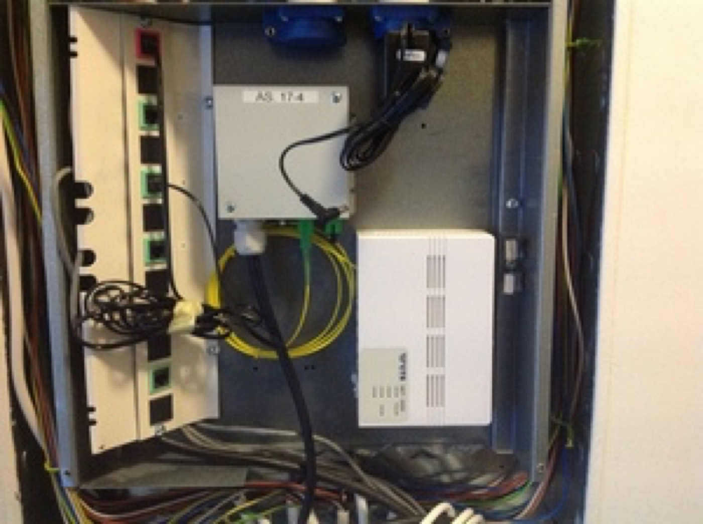

Valokaapeli
Paimensaaren asukasyhdistys rakensi Savitaipaleen haja-asutusalueelle valokaapeliverkon, joka liitettiin teleoperaattorin verkkoon tammikuussa 2014. Verkko rakennettiin pitkälti talkoilla.
- Valmistui
- Tammikuussa 2014, laajennus 31.10.2014. Projekti päättyi 30.11.2014.
- Liittymiä
- 92, joista käytössä 63. Päärunkokaapelissa on varauduttu 96 liittyjään, ja kapasiteetti voidaan kaksinkertaistaa.
- Kokonaiskustannukset
- 210 792 €. ELY-keskuksen tuki 70 % tukikelpoisista kustannuksista, enintään 119 000 €, joka käytettiin kokonaan.
- Hyväksytty valmiiksi
- ELY-keskus 21.1.2015
- Käyttöönottojuhla
- 24.1.2014 Suvannossa
Kohderyhmänä ja hyödynsaajana ovat Paimensaaren, Hakamäen ja Kuhaniemen vakituiset asukkaat ja niin sanotun kakkosasunnon asukkaat sekä alueen yrittäjät. Verkkoon on liittynyt myös Savitaipaleen kunnan ja seurakunnan kiinteistöjä, palveluyrittäjiä ja yhdistyksiä.
Hankkeen tavoitteena oli säilyttää Paimensaari elinvoimaisena kylänä, jossa syntyy myös uutta yritystoimintaa. Kunnan, valtion ja terveydenhuollon palvelut ovat siirtyneet verkkoon, ja valokaapeliliittymä auttaa ikäihmisiä asumaan kotonaan entistä kauemmin. Nyt ihmisten ei tarvitse matkustaa palavereihin autolla, vaan töitä voi tehdä Paimensaaressa yhtä helposti kuin kaupungissa.
Liittymän hankkiminen
Verkkoon voi yhä tilata liittymän asukasyhdistykseltä, mutta ELY-tukea ei ole enää käytettävissä. Paimensaaren verkon alueella on vielä useita tontteja, joihin kuitua ei ole toteutettu — kuituverkossa on reserviä ja liittymä on saatavissa kaikille.
- Uusi liittymä
- 1 990 € + rakentamiskustannukset, jotka Paimensaaren verkon alueella eivät ole kovin isot
- Osittain maksetut
- Liittymämaksu on entinen, mutta sen lisäksi laskutetaan mahdollisesti syntyvät todelliset toteutuskustannukset
- Alkuperäinen hinta 2014
- Omakotitalot 1 290 €, rivitalot 1 250 €, varaukset 1 150 €
- Yhteydenotot
- Ota yhteys puheenjohtajaan. Palvelut tilataan Saimaan Kuitu Oy:ltä.
Palveluhinnasto
Hinnat sisältävät verkon vikahallinnan ja ylläpitopalvelut. Tarkemmat tiedot löytyvät Saimaan Kuitu Oy:n sivustolta.
- Saimaankuitu 100/100
- 33,30 €/kk
- Saimaankuitu 300/300
- 40,30 €/kk
- Saimaankuitu Giga 1000/1000
- 70,70 €/kk
- Yhdistyksen käyttömaksu
- 15 €/vuosi käytössä olevilta liittymiltä (1.1.2023 alkaen; aiemmin 25 €/v)
Yhdistys hoitaa itse osan verkkotietojen ylläpidosta, uusien liittymien suunnittelutöistä, verkkotietojärjestelmän päivityksistä, asennusvalvonnasta, kirjanpidosta, verohallinnasta ja toimistotöistä. Käyttömaksulla katetaan näistä aiheutuvat kulut. Laskutuksen hoitaa BLC.
Osa kuntien laajuista verkkoa
Paimensaaren verkko rakennettiin niin, että se voitiin liittää osaksi koko kunnan laajuista verkkoa, jonka rakentaminen valmistui pääosin vuonna 2019. Verkkoa rakentamaan ja ylläpitämään perustettiin vuonna 2015 Saimaan Kuitu Oy, jonka omistavat Savitaipaleen, Taipalsaaren, Lemin ja Luumäen kunnat.
Yhteistyötä tehdään Lappeenrannan Energiaverkot Oy:n, Kymenlaakson Sähkön, Luumäen kaukolämpöyhtiön, Elisan ja Telian sekä kuntien kanssa — sähköverkon, katuvalaistuksen ja kaukolämmön rakentamisen yhteydessä.
Rakentaminen 2013
Verkon toteutusvaihe alkoi lokakuussa 2013. Alla kylän oma kuvaus työvaiheista.
-
Teiden alitukset
Toteutus alkoi teiden alitusputkien asennuksella. Se tapahtui paineilmakäyttöisen ”myyrän” avulla, joka iskee reiän ja vetää putken perässään. Näin vältyttiin tien katkaisulta ja häiriöltä liikenteelle. Hiekkatieosuuksilla teitä katkaistiin kaivamalla tai auraamalla.

-
Kaapelin asennus alkaa
Valokaapelin varsinainen asennus maahan alkoi keskiviikkona 16.10.2013 Suvannosta kohti Paimensaarta.
-
Talkoita pihoilla
Kaapeliasennusta Paimensaarentie 24 A1–A4:ssä. Koko päivä meni neljän asunnon kanssa kahteen mieheen: noin 70 metriä kaapeliojaa ja putkea. Reikien teko oli iso urakka, kun piti purkaa verannan kaiteetkin. Talkoot kannattivat, sillä säästettiin iso tukku euroja.


Valokaapeli asennettiin 30 mm:n suojaputken sisään, joten asennus voitiin tehdä matalaan, 20–30 cm syvyyteen. Laattojen alla kaapeli on hyvässä suojassa.

Jos huoneistoon ei pääse valmiita putkia pitkin, joudutaan erilaisiin reijityksiin. Monissa taloissa valokaapeli tuotiin tiiliseinänkin läpi suoraan esimerkiksi olohuoneeseen. Aina löytyy reitti kaapelille.
-
Auraus
Kun vanhat kaapelit, putket ja kalliot eivät estä, kaapelit voidaan asentaa nopeasti auraamalla. Paimensaaressa tällaisia reittejä oli hyvin vähän.

-
Jatkoskaivot ja kytkennät
Runkokaapelin muovinen jatkoskaivo on halkaisijaltaan 100 cm ja 70 cm syvä, ja se sijoitettiin maan alle. Jatkoskaivossa haaroitetaan runkokaapelit ja liitetään kiinteistökohtaiset kaapelit runkoverkkoon.

Kuidut hitsataan jatkoskotelossa ja kiinnitetään kytkentälevyille. Asennus on tarkkuutta ja puhtautta vaativa työ, ja se tehdään peräkärryssä vedettävässä työkopissa. Varsinaiset valokuidut ovat erittäin ohuita, hiuksenhienoja päällystettyjä lankoja, joilla on tarkka värikoodijärjestelmä. Paimensaaressa käytettiin pelkästään ruostumattomia jatkoskoteloita niiden pitkän takuuajan vuoksi.


Kaapeleissa tulee olla reserviä noin 15 metriä jatkoksen asennusta varten; ylimäärä kiepitetään kaivoon. Muutaman viikon kuluttua nurmikko peittää alueen.
Laitteet kotona
Uusissa päätelaitteissa on perustason wifi valmiina, joten laite kannattaa sijoittaa avoimeen paikkaan, ettei signaali heikkene seinien takia. Paras paikka on usein olohuoneessa television lähellä, koska televisio liitetään päätelaitteeseen CAT 6- tai CAT 7 -verkkokaapelilla. Sopimuksen mukainen nopeus saavutetaan, kun laitteet liitetään toisiinsa verkkokaapelilla.

Valokaapelin rakentamisesta on oma kuva-albuminsa galleriassa.